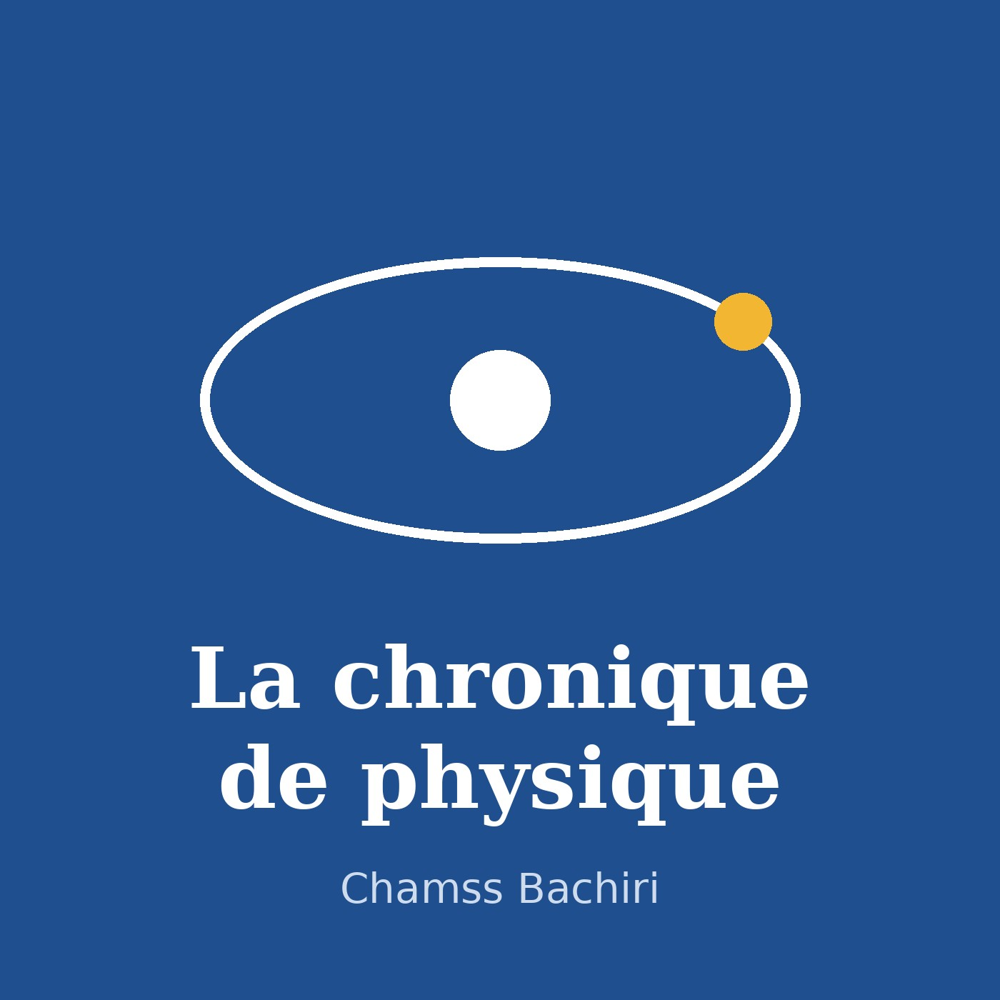

Podcast

La chronique de physique. Des épisodes courts sur l'actualité de la physique et sur des travaux de recherche : une publication, une thèse, un sujet.
Les textes sont écrits avec l'aide de l'intelligence artificielle à partir des sources citées sous chaque épisode, puis lus par une voix de synthèse.
Chargement…